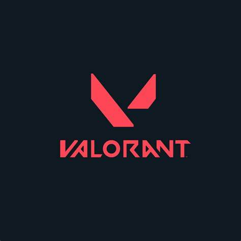

Bienvenido a la facción Valorant
Valorant es un Tactical Shooter en primera persona desarrollado por Riot Games. El juego combina mecánicas de disparos precisos con habilidades únicas de cada agente, lo que lo hace un juego muy estratégico.
Como se juega?
Hay 2 bandos, Atacantes que tienen que ir a uno de los lugares indicados en el mapa y evitar que la bomba denominada como Spike sea desactivada, y los defensores que tienen que evitar que los atacantes planten la Spike, y si falllan deberan de ir a desactivarla antes de que acabe el tiempo.
La partida tine 24 rondas, a las 12 ambos equipos cambian de bando, el primero en llegar a 13 ountos gana la partida.
